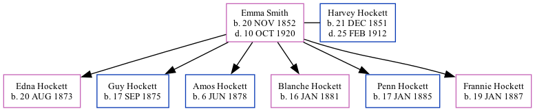

Emma Hockett (née Smith) 1852 - 1920
[ Home ] | [ Surnames Index ] | [ Census Index ] | [ Family History ], the wife of Harvey Hockett (the three times great-uncle of Jay Hannah), was born on Nov 20, 1852 and married Harvey (with whom she had 6 children: Edna, Guy, Amos, Blanche, Penn and Frannie) on Jul 3, 1871.
She died on Oct 10, 1920.
Children
- Edna was born on Aug 20, 1873
- Guy was born on Sep 17, 1875
- Amos was born on Jun 6, 1878
- Blanche was born on Jan 16, 1881
- Penn was born on Jan 17, 1885
- Frannie was born on Jan 19, 1887
Family Tree
Generated by ged2site. Last updated on Jun 13, 2024